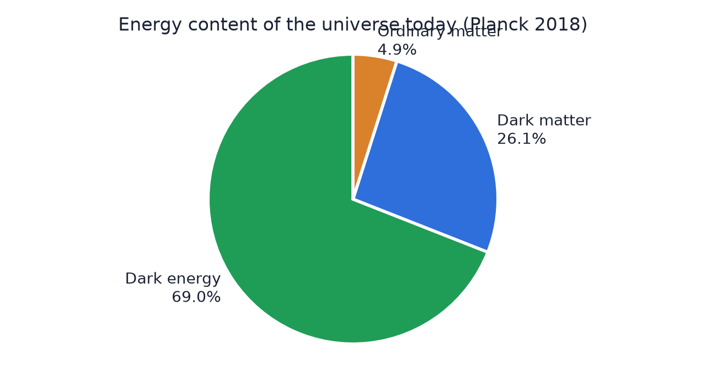
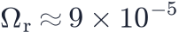
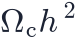
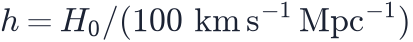
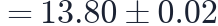
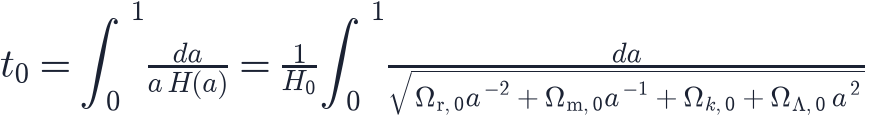

In this lesson you will learn
|
The standard model of cosmology
Putting together everything from Levels 1–3, cosmologists arrived at a model that fits a huge range of observations. It is called ΛCDM ("Lambda-CDM"):
- Λ: a cosmological constant (dark energy with
 );
); - CDM: cold dark matter, a type of dark matter whose particles moved slowly (were "cold") when structures began to form;
- plus ordinary matter (baryons), photons and neutrinos;
- a spatially flat geometry;
- an early hot, dense phase (the Big Bang) and tiny initial density fluctuations with almost the same strength on all scales.
The energy budget

| Component | Density parameter today | Share |
|---|---|---|
| Dark energy (Λ) | about 69% | |
| Cold dark matter | about 26% | |
| Ordinary matter (baryons) | about 5% | |
| Radiation (photons + neutrinos) |  |
0.01% |
We understand only 5% Everything ever seen through a telescope, every star, planet and gas cloud, is part of the 5% of ordinary matter. The other 95% is dark matter and dark energy, whose nature is unknown. |
Six numbers
The simplest ΛCDM model has just six free parameters. One common choice:
 : density of ordinary matter;
: density of ordinary matter;
: density of cold dark matter;- : the angular size of the sound horizon in the CMB (closely related
to
 );
);  : how much the CMB light was scattered after the first stars reionised
the universe;
: how much the CMB light was scattered after the first stars reionised
the universe;- : the strength of the initial fluctuations;
- : how that strength changes with scale.
Here

. Everything else, includingPlanck 2018 values km/s/Mpc, ,
 billion years. The Cosmos app uses the closely related "Planck 2018" parameter set that includes baryon acoustic oscillation data (, ). |
Computing the age of the universe
Since  , a small time step is . Adding up all steps
from the Big Bang () to today (
, a small time step is . Adding up all steps
from the Big Bang () to today ( ):
):

The integral has to be evaluated numerically for our universe. For the Planck 2018 parameters it gives billion years.
Coincidence explained The age is very close to the Hubble time |
Try it: Cosmology Calculator Compute the age of the universe for Planck 2018, then for Einstein–de Sitter with the same H0. |
Successes of ΛCDM
The same six numbers explain, among other things:
- the detailed pattern of temperature fluctuations in the CMB;
- the abundances of hydrogen, helium and deuterium from nucleosynthesis;
- the distribution of galaxies and baryon acoustic oscillations;
- the Hubble diagram of Type Ia supernovae;
- gravitational lensing by large-scale structure.
Cracks in the model?
ΛCDM is a working description, not a final theory:
- the physical nature of dark matter and dark energy is unknown;
- local measurements of (about 73) disagree with the value inferred from the
CMB (about 67): the Hubble tension;
- the clumpiness of matter measured by lensing surveys is slightly lower than predicted (the S8 tension);
- recent survey results hint that dark energy might evolve.
Whether these are measurement issues or signs of new physics is one of the most exciting questions in cosmology today.
Remember this
|